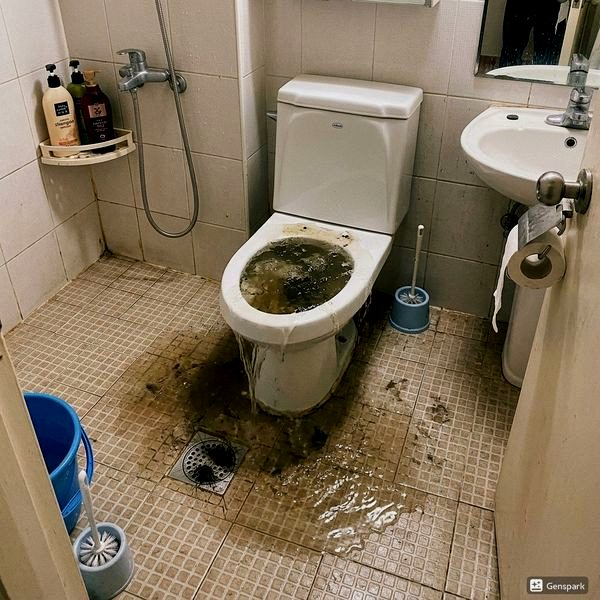
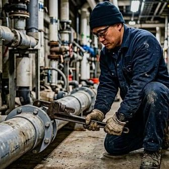
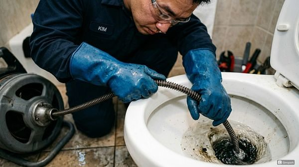

여름 장마철 하수구 대비 완벽 가이드
2026년 4월 12일 | 제우스시설관리
여름 장마철은 하수구 문제가 가장 많이 발생하는 시기입니다. 집중호우로 하수관이 넘쳐 역류하거나, 배수구가 막혀 침수되는 사고가 빈번합니다. 장마가 시작되기 전에 미리 대비하면 피해를 최소화할 수 있습니다.

장마 전 필수 점검 사항입니다. 첫째, 모든 배수구의 거름망과 뚜껑을 확인하세요. 이물질이 쌓여있으면 제거합니다. 둘째, 옥상과 베란다의 우수 배수구를 청소합니다. 낙엽이나 먼지가 막고 있으면 빗물이 빠지지 않아 침수됩니다.
셋째, 역류방지밸브 작동 상태를 점검합니다. 이 밸브가 고장나면 하수관의 물이 집안으로 역류합니다. 넷째, 지하실이 있는 건물은 배수 펌프의 작동을 확인하세요. 정전에 대비한 비상 발전기나 배터리 백업도 준비하면 좋습니다.

폭우 중 하수가 역류하기 시작하면, 즉시 배수구를 비닐로 덮고 물을 채운 양동이를 올려놓으세요. 임시방편이지만 역류 속도를 늦출 수 있습니다. 전기 콘센트가 침수 위험 높이에 있다면 차단기를 내려 감전을 예방하세요.

제우스시설관리는 장마철 24시간 긴급출동 체제를 운영합니다. 고압세척기로 막힌 배수관을 긴급 개통하고, 관로탐지기로 배관 상태를 진단합니다. 28분 내 출동 보장, 전화: 010-4406-1788